6．非欧几里得几何的技术性内容
高斯、罗巴切夫斯基和约翰·波尔约都认识到欧几里得平行公理不能在其他九条公理基础上证明，也认识到附加平行公理是建立欧几里得几何所必需的。因为平行公理是独立的事实，于是至少从逻辑上讲有可能采取一个与此相矛盾的命题并从新的一组公理来推导出结论。
要研究这三人创建的专门内容，最好取罗巴切夫斯基的工作，因为三人所做的都一样。众所周知，罗巴切夫斯基发表了几次文章，只是在细节上有所不同，这里将用他1835年至1837年的文章作为叙述的基础。
因和欧几里得的《原本》一样，很多定理的证明可以不依赖于平行公理，这些定理在新几何中也是正确的。罗巴切夫斯基在文章前六章中专致力于基本定理的证明，开始他假定空间是无限的。于是他能证明两直线相交不能多于一个点，同一直线的两垂线不相交。
第七章中罗巴切夫斯基果敢地放弃欧几里得平行公理，做出下面的假设：给出一条直线AB与一点C（图36.5），通过点C的所有直线关于直线AB而言可分成两类，一类直线与AB相交，另一类不相交。p与q属于后一类，构成两类间的边界。这两条边界线称为平行直线。更确切地说，若C是与直线AB的垂直距离为a的一点，于是存在一个角(15)π（a），使得所有过C的直线与CD所成的角小于π（a）的将与AB相交；其他过C的直线不与AB相交(16)。与AB成角π（a）的两直线是平行线，π（a）称为平行角。除平行线外，过C而不与AB相交的直线称为不相交直线，虽然在欧几里得意义下，它们是与AB平行的，所以从这个意义上讲，在罗巴切夫斯基几何里，过C有无穷多条平行线。
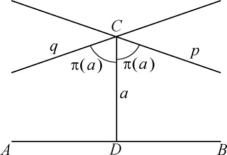
图36.5
当π（a）＝π/2，则得出欧几里得平行公理。若π（a）≠π/2，则当a减小到0时，π（a）增加且趋于π/2，而当a变成无限大时，π（a）将减小而趋于零。三角形的内角之和恒小于π，且随着三角形面积的增大而减小，当面积趋于零时，它就趋于π。若两三角形相似，则它们全等。
罗巴切夫斯基现在转向他几何的三角学部分，第一步是确定π（a）。若全中心角为2π，结果是(17)
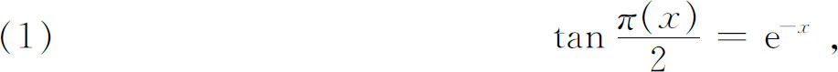
由此得出
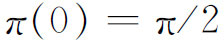
及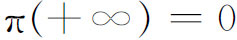
。关系式（1）的重要之点在于，对每个长度x关联着一个定角π（x）。当x＝1时，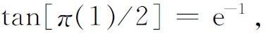
所以π（1）＝40°24′。这样，单位长度是平行角为40°24′的长度。这个单位长度没有直接的物理意义，物理上可以是一英寸或是一英里。人可以选择物理解释，使得几何能有物理的应用(18)。
罗巴切夫斯基于是导出他几何中平面三角形边与角的公式。在1834年一篇论文中，他定义了实数x的cos x与sin x作为
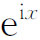
的实部与虚部。罗巴切夫斯基的观点是要纯分析地给出三角学，以使它完全独立于欧几里得几何。他的几何中主要三角公式是（图36.6）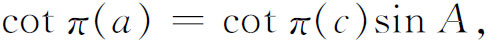
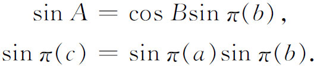
假若边长是虚数，这些公式在普通球面三角中成立。就是说，若在球面三角的普通公式中，用ia，ib与ic以代替a，b，c即得到罗巴切夫斯基的公式。因为虚角的三角公式能以双曲函数代替，人们会料到在罗巴切夫斯基公式中能看到双曲函数。应用关系式
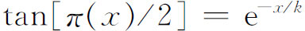
即可引进它们。上面第一个公式将变成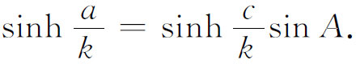
在普通球面三角中，三个角为A，B，C的三角形面积是
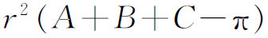
，而在非欧几里得几何中这面积是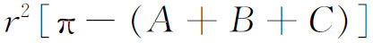
，它相当于在普通公式中用ir代替r。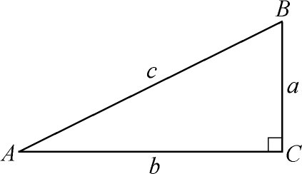
图36.6
根据对无穷小三角形的研究，罗巴切夫斯基在第一篇文章（1829—1830）中导出了公式
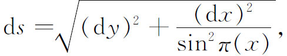
作为曲线y＝f（x）上在点（x，y）处的弧微分。于是可算出半径为r的圆周长为
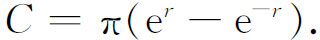
并证明圆面积表达式为
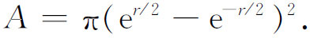
他也给出了有关平面曲线区域的面积与立体体积的一些定理。
当度量很小时可以从非欧几里得公式得出欧几里得几何公式。例如，若用
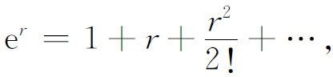
并对小的r略去前两项后的其余各项，例如
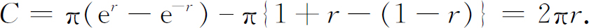
在第一篇论文（1829—1830）中罗巴切夫斯基也考虑到他的几何对物质空间应用的可能性。他论据的要点是基于恒星的视差。设E1及E2（图36.7）是地球相差6个月的位置，S是一颗星，S的视差p是从垂线（比如说）E1S′测得E1S与E2S方向上的差值。如果E1R是E2S的欧几里得平行线，那么因为E1SE2是等腰三角形，
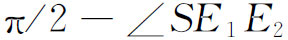
是星的方向改变的一半，即p/2。对于天狼星（Sirius），这个角是1″．24（罗巴切夫斯基的值）。只要这个角不是零，从E1到星的直线就不能平行于TS，因为这直线交于TS。然而，如果对于所有星的不同视差有一个下界的话，则任何过E1的直线，若它与E1S′所成的角小于这个下界，都可以作为过E1点平行于TS的直线，并且这个几何就恒星的测量而言就会是同样有用的。但罗巴切夫斯基随即证明在他的几何中单位长度在物理意义下应该比地球半径百万倍的一半还要大。换言之，罗巴切夫斯基的几何只有在十分大的三角形中才可以应用。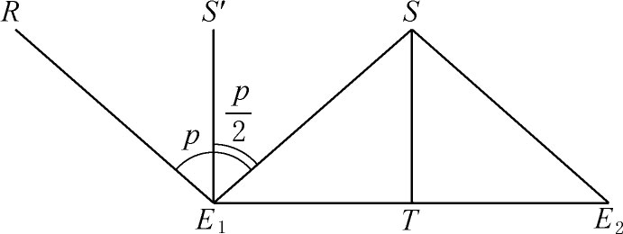
图36.7